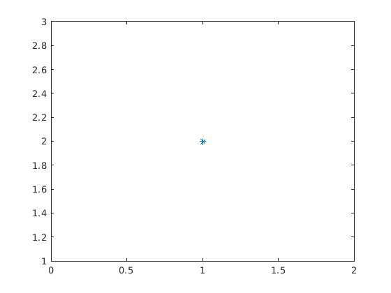
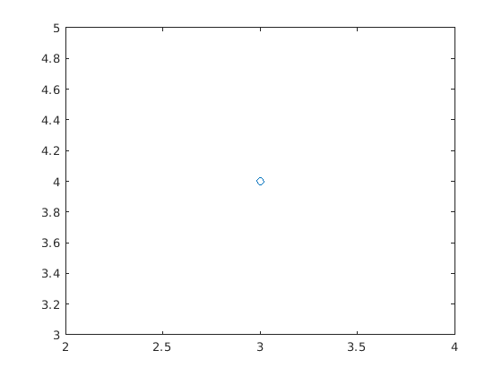

Contents
Kā ģenerēt uzdevumu studentam
Matlabs ļaus ģenerēt atskaites no jūsu programmām te būs piemērs
for i = 1:3
switch randi(3) case 1 disp('Kā izveidot matricu') A = [randi(10),randi(10);randi(10) randi(10)] case 2 fprintf('Kā izveidot vektoru ') fprintf('no %d līdz %d ar soli %d', randi(3),... randi(3)+10,randi(3)) case 3 w = {'sin', 'cos', 'tan'}; fprintf('izrēķināt %s(pi/3)', w{randi(3)}) end
Kā izveidot vektoru no 1 līdz 13 ar soli 3
Kā izveidot vektoru no 1 līdz 13 ar soli 3
Kā izveidot vektoru no 3 līdz 11 ar soli 3
end plot(1,2,'*')
plot(3,4,'o')
 Kā ielikt bildi
Te var likt bullets (ar zvaignzītēm)
- bullet 1
- bullet 2
jeb arī
- pirmais
- otrais
šis būs no nākamās rindas vairāk informācijas doc publish